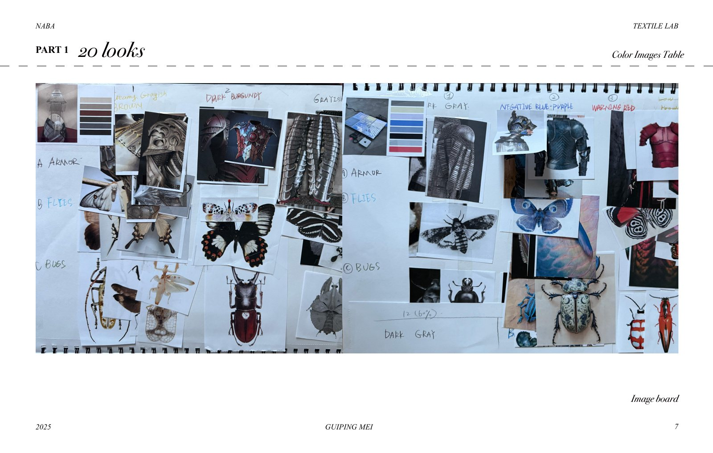
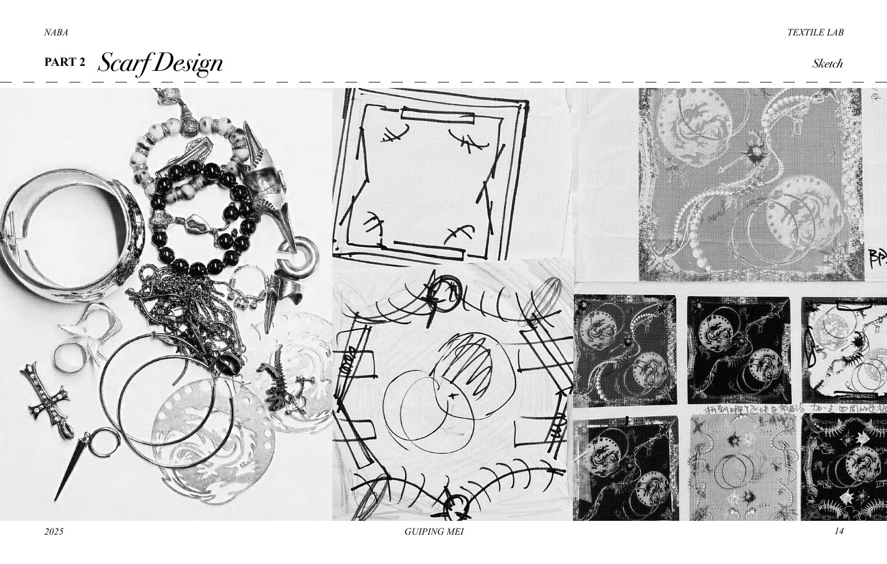
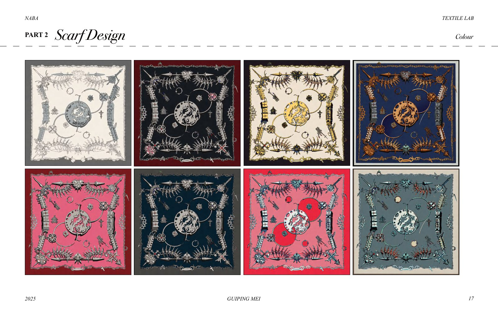
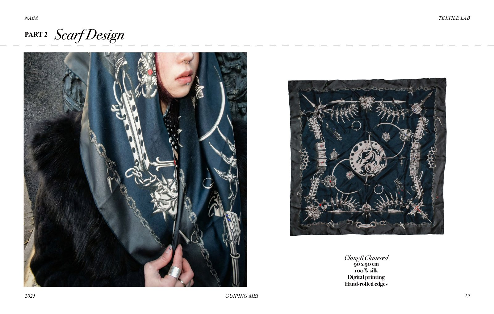
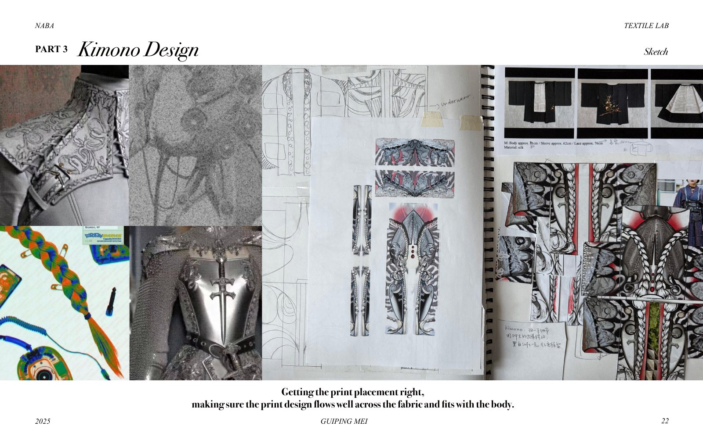
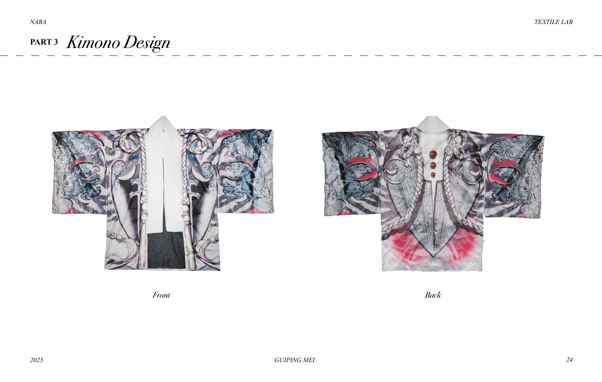

Project Overview
A print system built from impact.
盔甲、昆虫、链条与刀刃被拆解成可以不断重组的视觉零件。项目先建立 20 套造型的色彩与图案语言，再把同一套系统压缩进方巾，最后扩展到和服式定位印花。
不是把图案简单复制到不同载体，而是测试它在“方形边界、身体包裹、前后对称”三种尺度里的力度与节奏。
System6:3:1 色彩比例与 20 looks 阵列
Object方巾：中心徽章、边框与旋转构图
Body和服：跨越衣身的连续定位印花
01 · Visual System
From fragments to a collection.
以 Armor、Bugs、Flies 为起点，把图像切成可替换的局部，再用 6:3:1 的色彩规则建立统一却不重复的系列秩序。Research · Image board · 20-look line-up



One vocabulary, multiple scales
链条提供方向，昆虫骨骼提供结构，金属表面提供冷感。三类元素共同构成后续方巾和和服图案的母语。
02 · Square Scarf
A portable field of tension.
方巾被当成一个可旋转的舞台：中心锁定视觉重量，四角保持动作，链条沿边缘形成闭环。多组配色检验图案在折叠、围裹和贴近面部时的识别度。Motif · Colourways · Styling




Square / Repeat / FoldThe design remains legible whether displayed flat or compressed around the body.
03 · Kimono Placement
The image crosses the body.
在和服式轮廓上，图案不再只是平面重复。金属与昆虫的缠绕从前片穿过侧缝延续至背部，让衣身在静止时像图腾，动作时则像被拉开的机械结构。Placement print · Front / Back · Campaign





One graphic language, translated from collection to object to body.
Return to the system ↑